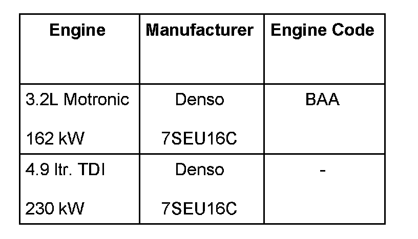

Compressor, Procedure After Installation
Compressor, Procedure After Installation
NOTE:
- The compressor is continuously driven by the ribbed belt pulley/ Hardy coupling (no A/C clutch).
- Should a compressor malfunction (lock-up) the overload protection for the compressor shaft is triggered. An indication the compressor has locked-up is deformations/bumps on the ribbed belt pulley, but these are not always easy to detect. Another indicator is abraded rubber material in the area of the ribbed belt pulley/overload protection.
- The compressor has an internal oil circuit to ensure the compressor is not damaged should the refrigerant circuit be empty. Prerequisite for the internal lubrication is residual refrigerant oil in compressor.
- As there is no refrigerant in the circuit the oil required to lubricate is not fed to the compressor.
- A/C Compressor Regulator Valve -N280- is not activated when the refrigerant circuit is empty and the compressor idles with the engine.
CAUTION: Do not start engine with open refrigerant system (E.g.: refrigerant lines not connected to compressor or other refrigerant system components). Compressor will overheat and will be damaged.
If possible, start engine only with a completely filled refrigerant circuit.
In order to prevent damage after installing new compressor or recharging refrigerant, perform the following before starting engine:
V6 & V8
- Turn compressor 10 revolutions by hand.
V10 TDI
- Turn compressor 10 revolutions on Hardy coupling by hand and then install compressor. then....
- Switch on ignition (do not start engine)
- Select "Econ" mode on Climatronic control head
- Start engine and wait until idle speed stabilizes.
- Open all instrument panel vents.
- Select "Low" temperature setting on Climatronic control head.
- Select "Auto" mode on Climatronic control head (compressor regulation activated) and allow engine to run for 5 minutes at idle.
If it is necessary to start engine with empty refrigerant circuit, proceed as follows:
- Refrigerant circuit must be fully assembled/closed.
- At least 1/4 of the prescribed refrigerant oil must be in the compressor.
- Engine speed must not exceed 2500 rpm.
- Run engine only as long as absolutely necessary.
Compressor Applications, Overview
